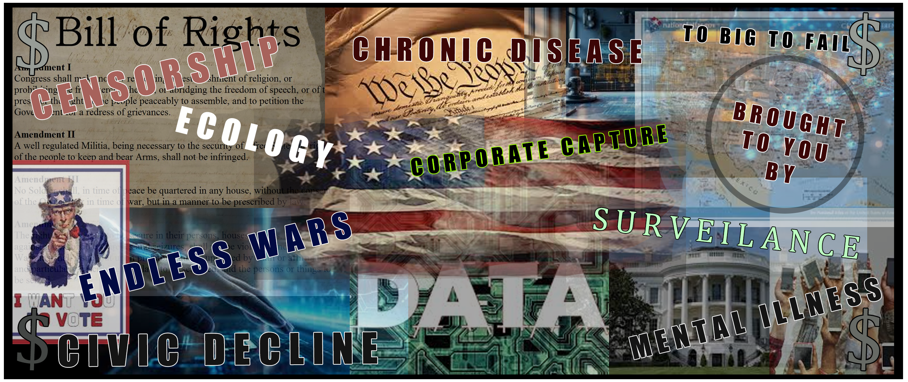

Uniting America's Reform Movement
In an era of unprecedented division and civic decline, the Unity Coalition emerges as a pioneering framework for reuniting Americans across traditional political and social boundaries. Our mission is to identify and amplify the common ground between reform-minded citizens, fostering a renaissance of civic engagement and shared purpose.
